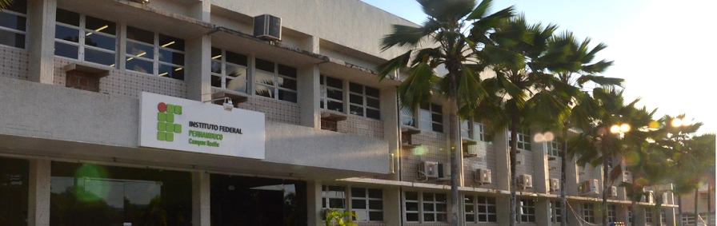

Comece agora >
Você trabalhará, descobrirá, evoluirá e emergirá com um profissional de TI. Desenvolverá habilidades para ser um excelente técnico, lider e alguém que poderá fazer a diferença para a sua comunidade e o mundo. Junte-se a nós!
Disciplinas - Fundamentos
- Iniciação a informática
- Metodologia de Pesquisa
Disciplinas - Linguagens
- Fundamentos de Programação
- Linguagem de Programação 1
- Linguagem de Programação 2
Disciplinas - Engenharia de Software
- Análise e Projeto de Sistemas
- Métodos Ágeis
- Interface Humano Computador
- Gerência de Configuração e Testes
- Gerência de Projetos
Pesquisas em destaque
Explore os Projetos >
Seja um mentor!
Conheça nossa estrutura >
Disciplinas - Outras
- Banco de Dados
- Computação Distribuída
- Arquitetura e Organização de Computadores
- Sistemas Operacionais